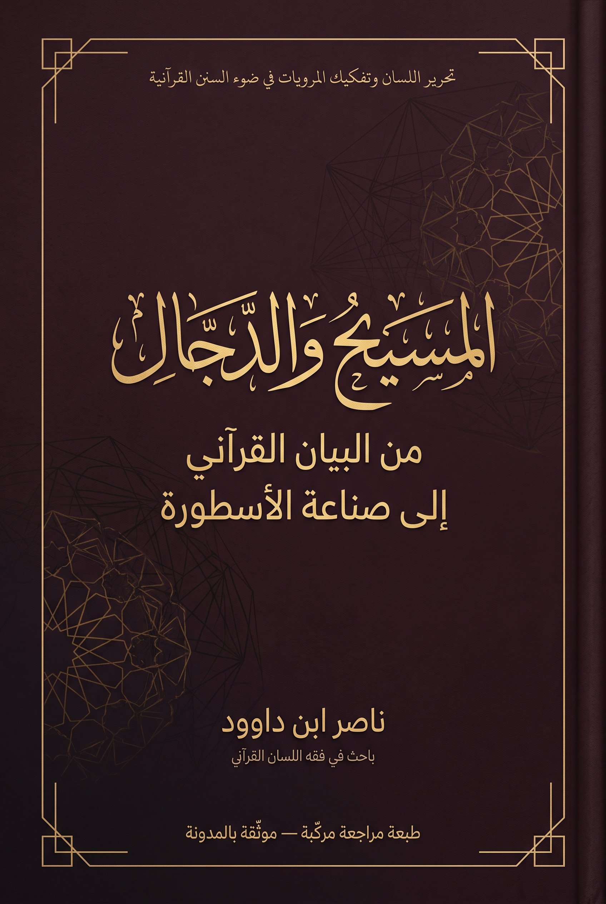

125. المسيح والدجال: من البيان القرآني إلى صناعة الأسطورة

دراسة في اللسان القرآني والمرويات والتاريخ المقارن وتلقي مفهوم المسيح الدجال، تفصل الجرد النصي عن نقد الرواية والفرضية التاريخية والنموذج التفسيري، وتحفظ القضايا المفتوحة دون إسقاطات قسرية على أشخاص أو تقنيات. الإنجليزية تكييف مفاهيمي مختصر.
النسخة الإنجليزية مختصرة ومفاهيمية، وليست ترجمة حرفية كاملة؛ يبقى النص العربي المرجع الأساسي للتفصيل والإحالات.
قراءة PDF داخل الموقع / Read the PDF on this website
جارٍ تجهيز القارئ… / Preparing the reader…
ملخص الكتاب وفهرسه الموضوعي (مقتطف نصي للفهرسة والبحث)
المسيح والدجال: من البيان القرآني إلى صناعة الأسطورة
تحرير اللسان وتفكيك المرويات في ضوء السنن القرآنية ومنهج الاستقراء والضبط والاختبار (QCROS Method)
تأليف: ناصر ابن داوود
(باحث إسلامي ومهندس — مشروع فقه اللسان القرآني)
الحالة العلمية: طبعة مراجعة مركّبة / موثّقة بالمدونة النصية / مع حفظ القضايا المفتوحة (Composite Review Edition / Corpus-Verified / Open Issues Preserved)
2026
1 ملخص الكتاب
يبحث هذا الكتاب في تشكّل مفهوم (المسيح الدجال) وفي موقعه من البيان القرآني والمدونة الحديثية والتاريخ المقارن، ثم يختبر ما يترتب على جعله عدسةً تفسيريةً لقراءة الفتن والتاريخ والمستقبل. والسؤال الناظم له هو: كيف انتقل هذا المركب من الأخبار والروايات إلى بنية تفسيرية واسعة، وما حدود هذه البنية عند مقارنتها بشبكة المفاهيم القرآنية وسننها؟
يعتمد البحث بروتوكول الاستقراء والضبط والاختبار (QCROS Protocol)، فيفصل بين الملاحظة النصية، والشاهد المعجمي أو التاريخي، والاستنباط، والنموذج التفسيري، والفرضية المفتوحة. ويُظهر الجرد القرآني خلوّ المصحف من جذر (د ج ل) ومن مركب (المسيح الدجال)، كما يثبت ورود لقب (المسيح) إحدى عشرة مرة في تسع آيات في شأن عيسى ابن مريم عليه السلام، مع فصل ذلك إحصائياً عن الموارد الصرفية الأربعة لجذر (م س ح). وهذه نتائج في حدود المدونة القرآنية؛ ولا تكفي وحدها لنفي كل خبر خارجها أو لإثباته.
ويفحص الباب الثاني حزم الأخبار المتعلقة بتميم الداري والجساسة، وابن صياد، وأوصاف الخوارق والملاحم، واختلاف ألفاظ أخبار حفظ أو قراءة آيات من سورة الكهف. ويعامل كل طريق ومتن بحسب شواهده، مميزاً بين اختلاف اللفظ، والتعارض الظاهر، وإمكان الجمع، والحكم الإسنادي؛ فلا يجعل مجرد التباين حكماً نهائياً على جميع الروايات. كما يقارن شواهد مسيحية شرقية وسريانية سابقة أو موازية، مع إبقاء دعوى الاقتباس المباشر ومسار انتقال المصطلح إلى العربية في رتبة المرشح أو المسألة المفتوحة.
ويقترح الباب الثالث قراءةً سننيةً لشبكة الفتنة واللبس والفساد والتدافع، ويفحص قصص سورة الكهف بوصفها نماذج قرآنية لمواقف الإيمان والمال والمعرفة والسلطة والعمل الجماعي، وتكتمل القراءة بالفصول المضافة حول المنظومة الشيطانية الكاذبة وإبستمولوجيا التلقي، ومعنى (الساعة) وانكشاف السعي، وحقيقة (الجن في القرآن) والتكليف. أما الباب الرابع فيختبر توظيفات الخطاب النهاياتي في قراءة التقنية والسياسة المعاصرتين، ويرفض المطابقة القسرية بين الروايات وأشخاص أو مؤسسات أو تقنيات بعينها. ويختم بميثاق للأمان المعرفي بوصفه إرشادات عملية للتثبت وإدارة الخطاب والقيام بالمسؤولية، لا نصاً قرآنياً مركباً ولا بروتوكولاً علاجياً.
تظل القضايا التي لم تستوف شواهدها مسجلةً مفتوحة. ولا يُطلب من القارئ التسليم بنتيجة مسبقة، بل تتبع مصدر كل دعوى ومرتبتها، واختبارها بسياقها وشواهدها المقابلة.
2 فهرس المحتويات التفصيلي
3 كيف تقرأ هذا الكتاب: خريطة طريق منهجية
1. ابدأ بالقسم التأسيسي وميثاق القارئ. اقرأ سؤال البحث، وحدود المدونة، ومراتب التقييم العلمي (QCROS) قبل النظر في النتائج؛ فمرتبة (الرصد النصي) (OBSERVED) تصف ما جُرد أو شوهد، ومرتبة (الدعم بالشواهد) (SUPPORTED) لما تسنده شواهد محددة، ومرتبة (الفرضية المرشحة) (CANDIDATE) لعلاقة أو فرضية تحتاج الاختبار، ومرتبة (النموذج التفسيري) (MODEL) للبناء التفسيري أو التشغيلي، ومرتبة (المسألة المفتوحة) (OPEN) لما لم يُحسم.
2. في الباب الأول، افصل بين جرد الألفاظ والصيغ القرآنية، وبين الشرح المعجمي، وبين الاستنباط الدلالي. واقرأ نماذج المثاني والحروف بوصفها أدوات لتوليد المقابلات والأسئلة، لا اشتقاقاً قطعياً ولا دليلاً مستقلاً على تاريخ اللفظ.
3. في الباب الثاني، تتبع كل حزمة روائية على حدة: نص المتن وطرقه، مواضع اختلاف الرواة، تاريخ الشاهد المقارن، ثم كيفية توظيف الخبر في الكتابات اللاحقة. لا تنقل حكماً على طريق إلى سائر الطرق، ولا تجعل اختلاف المتون وحده بديلاً عن التخريج والنقد التاريخي.
4. في الباب الثالث، ميّز بين منطوق الآية، والعلاقة السياقية أو الشبكية المستنبطة، والنموذج الوظيفي المقترح. وعند قراءة سورة الكهف، راقب تنوع القصص: الثبات على الإيمان، وفتنة المال، وحدود المعرفة والصبر، وتدبير القوة والوسائل لمواجهة الفساد؛ من غير اختزالها في معنى واحد.
5. في الباب الرابع، اختبر كل تطبيق معاصر بسؤالين: ما الشاهد المستقل الذي يسنده؟ وما الاختبار العكسي الذي قد يضعفه؟ لا تعيّن تقنية أو دولة أو شخصاً بوصفه مصداقاً روائياً لمجرد التشابه، وافصل نقد الأفعال الموثقة عن التفسير الغيبي.
6. ارجع إلى سجل القضايا المفتوحة والجداول عند الحاجة، وسجّل الآية أو الرواية أو الطبعة وموضعها قبل اعتماد نتيجة. إبقاء المسألة مفتوحة (OPEN) ليس نقصاً في البحث، بل بيانٌ لحدود ما تسمح به الشواهد المتاحة.
7. اقرأ ميثاق الأمان المعرفي في خاتمة الكتاب بوصفه توجيهات للتثبت والسكينة العملية والمسؤولية، لا تشخيصاً نفسياً أو علاجاً ولا حكماً فقهياً مستقلاً.
4 المخططات البنيوية الأربعة
4.1 المخطط الأول — جرد (م س ح) ولقب (المسيح): مساران نصيان مستقلان
4.2 المخطط الثاني — خريطة فحص حزم المرويات
4.3 المخطط الثالث — نموذج تحليلي للفتنة والفاعلية وقصص الكهف
4.4 المخطط الرابع — من التلقي المذعور إلى القراءة المسؤولة
● بطاقة الضبط الإبستمولوجي (Epistemological Review)
تلتزم هذه الدراسة بقواعد الاستقراء والضبط والاختبار، وبالفصل بين مراتب الشواهد والفرضيات والنماذج التفسيرية، وفق الضوابط الحاكمة الآتية:
1. مراتب التقييم المعيارية (QCROS Statuses):
o ملاحظة نصية (OBSERVED): لما شُوهد أو جُرد إحصائياً في نص المصحف الشريف أو في ألفاظ المتون الحديثية الموثقة دون تأويل.
o مدعوم بشواهد محددة (SUPPORTED): لما تسنده شواهد معجمية تاريخية (كمقاييس اللغة لابن فارس ولسان العرب) أو قرائن سياقية نصية في نطاق محدد.
o فرضية مرشحة للاستقراء (CANDIDATE): لتصنيف موضوعي أو علاقة بنيوية أو فرضية مقارنة تمتلك شواهد أولية وتقبل المراجعة والاختبار العكسي.
o نموذج تفسيري أو تشغيلي (MODEL): لقراءة بنيوية أو وظيفية يقترحها المؤلف (أو يستمدها من مؤلفاته السابقة) لتشغيل المعنى في الوعي والواقع، ولا تُعرض بوصفها دلالة معجمية ملزمة أو نصاً قرآنياً.
o نموذج توليدي من الحروف المفردة / مسألة مفتوحة (LETTER-LEVEL GENERATIVE MODEL / OPEN): لما استُكمل من دلالات الحروف المفردة عند غياب الزوج الحرفي من قاموس المثاني المنشور، دون ادعاء كونه مدخلاً معجمياً أو اشتقاقاً قطعياً.